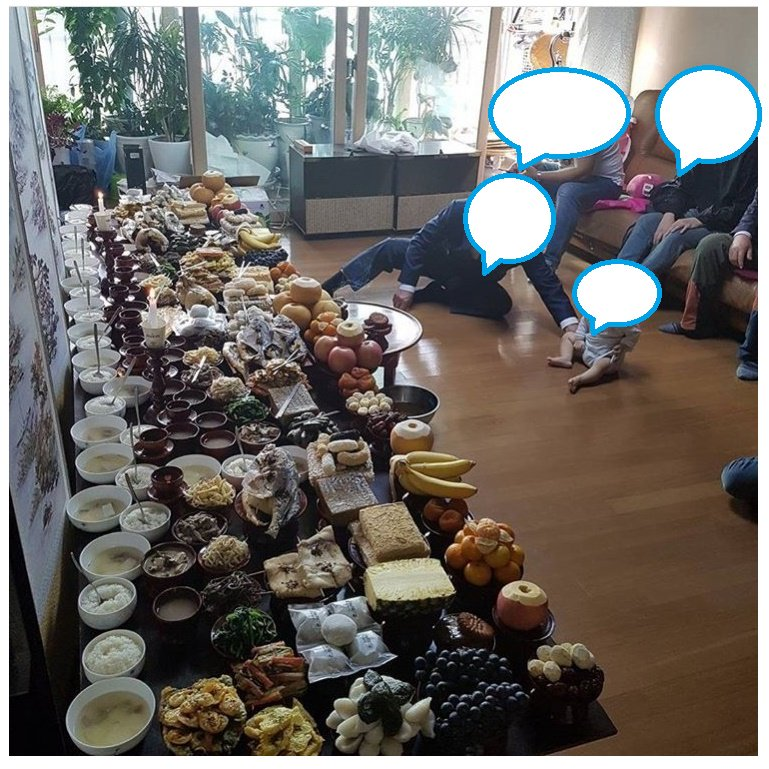

추석 특집 - 어느 아재와의 제사 관련 썰
게시: 2019-09-05T06:30:57+09:00
# 추석을 앞두고, 두 젊은 과차장급 엄마 직원들이 막 결혼한 젊은 여직원을 둘러싸고 "절대 애는 낳지마, 여자만 죽어나" 라고 이야기하더니 이번엔 아직 결혼하지 않은 고참급 여직원에게 "언닌 절대 결혼하지마요" 라고 세뇌 교육을 하고 있더군요....
# 이 글은 제삿상을 둘러싼 종교적 의미가 아니라 남녀 불평등에 대해 다루고 있습니다.
오늘은 담주 추석을 미리 축하하는 의미에서 전에 어떤 아재와 주고 받았던 잡담 이야기를 적습니다.
그 분과는 어쩌다 재산 상속에 대한 이야기가 나왔는데, 알고보니 그 분 처가댁이 상당한 부자셨습니다. 그래서 이야기가 이어졌습니다.
저> 와 그러면 님께서도 처가에서 나중에 유산을 좀 물려받으실 가능성이 있는거네요 ?
그분> 에이, 아니에요. 저희 처가는 남자 위주로 돌아가는 집안이어서, 딸에게는 돌아올 재산이 별로 없어요.
저> 그 말씀을 들으니, 문득 우리나라 제사 문화의 미래에 대해 생각이 드는 것이 있네요. 전에 어떤 남초 사이트 게시판을 봤던 기억이 나는데, 그 사이트는 주로 있는 집안 철없는 아들래미들이 모여서 떠드는 곳이었어요. 거기 주요 주제 중 하나가 누나와 여동생 등 여자 형제들에 대한 증오더라고요. '왜 재산을 여자들에게도 나눠줘야 하는지 모르겠다, 걔들에게 재산 나눠주면 걔들 남편들에게 우리 재산이 떨어져 나가는 것 아니냐' 뭐 그런 이야기였지요. 그런데 그런 찌질이들도 뭔가 정당성을 내세우고 싶은 모양이었는데, 걔들이 주로 주워섬기는 것이 제사였어요. '딸자식들은 부모 제사도 안 모시면서 왜 부모 재산 상속분에 숟가락을 얹으려 드냐 ?' 라는 것이었지요.
저는 예전에 한 30년 지나면 우리나라도 남존여비 분위기가 많이 사라질 것이고 그러면 자연스럽게 제사라는 풍습은 없어지겠구나 라고 생각을 했는데, 그런 찌질이들의 잡소리를 읽으니 제사가 없어지지 않을 수도 있겠구나 라는 생각이 들더라고요. 방금 말씀드린 이유 때문에라도 소위 '있는 집 아들들'은 어떻게든 제사를 지내려고 할 텐데, 무슨 이유로든 '있는 집안에서는 제사를 지낸다더라' 라는 이야기가 돌면 속사정도 모르고 없는 집안에서도 따라하는 경향이 생기지 않겠어요 ?
그분> ...저는 그런 거 떠나서, 제사라는 것이야말로 우리 조상들께서 남겨주신 정말 좋은 문화유산이라고 생각해요.
저> (놀람) 그래요 ? 왜요 ?
그분> 설마 조상님들이 정말 귀신 되신 뒤에 제삿밥 얻어드시려고 제사라는 거 만드셨겠어요 ? 제사라는 것이 있어야 평소 생업에 바빠 모이지 못했던 친인척들이 다 한집에 모여 얼굴도 보고 정담도 나누고 지지고 볶으면서 가족이 유지되는 것 아니겠습니까 ? 저희 집안에서도 아버님 형제분들이 제사 때마다 자식들 데리고 다 모여서 거나하게 취하실 때까지 술도 드시고 온갖 이야기 하시고 아주 즐겁게 노신 뒤에 밤 늦게야 돌아가시거든요. 전 이런 좋은 문화는 꼭 지켜야 한다고 생각해요.
저> ... 어우, 원래 '제사 때 이외에는 얼굴 볼 일 없는 친척은 그냥 안 보고 사는게 정답'이라는 말이 있던데.... 그 제삿상 차리고 모인 친척들 음식 대접하고 그러는 거 어머님과 며느리들에게는 정말 힘든 일일 것 같아요...
그분> 제사 그거 1년에 몇 번이나 드린다고 그 상차림 하나를 못하겠어요 ? 그것도 못하겠다 그러면 왜 같이 살아요 ? 이혼을 해야지.
저> ... 그러면 님께서는 처가댁 제사 지낼 때 와이프분 친인척들을 위해서 음식 준비하고 상 차리는 거 해드리세요 ? 그쪽도 뭐 1년에 몇 번이나 한다고 남편이 그거 하나 못해주겠어요 ?
그분> ......저는 처가댁에서 제사 지낼 때 봉투를 보태드려요.
저> ... 다음번 제사 때 와이프분께서 음식은 안 차리시고, 대신 제삿상 주문하고 제사 도우미 부르는데 보태쓰라고 봉투를 내미시면 어떠시겠어요 ?
그분> ...... 집에서 직접 하는게 더 싸게 먹혀요.
저> ... 아 맞다 처가댁이 부자라고 하지 않으셨어요 ?
그분> ......
저> ......

<전설의 '파혼 유발 짤'>